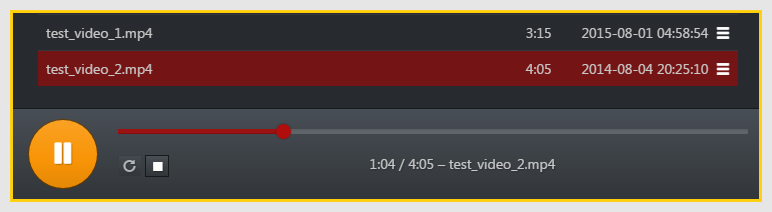
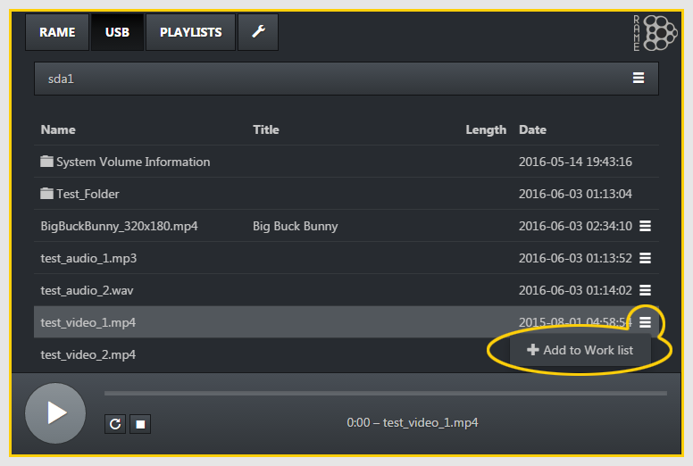
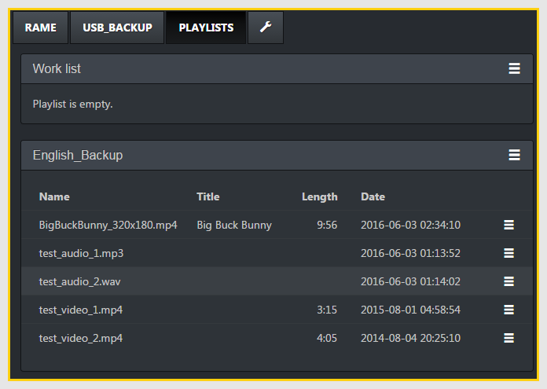
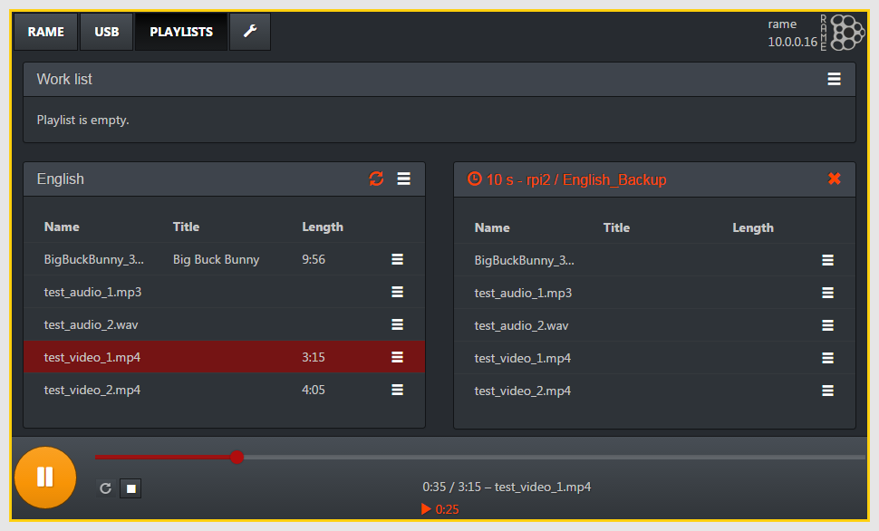
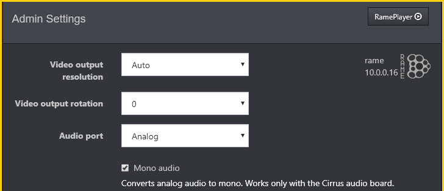
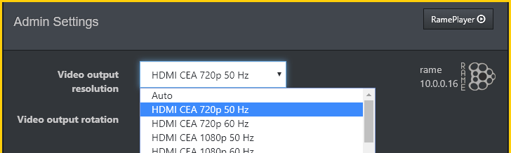

RamePlayer Manual & Help
Player Usage
You can access WebUI of the player by entering IP address visible on the LCD screen of the player. Connect to it from any computer connected to the same network.
Add all required media files into an USB drive and insert it into the USB port of the device. You will see a tab in the WebUI for the USB drive.
Select a file by clicking or tapping on it and wait for a small moment for the highlight cursor to update.

Press Play button to start playing of the video. After that you can use pause / stop buttons or seek by moving circular thumb icon on the timeline.
You can also play using the loop button, in which case the player will keep looping the same video.

Playlists
You can add files into the Work list from an USB drive by going into the USB drive tab and then from the wanted file, click + Add to Work List from the dropdown menu.
You can alternatively also use top level dropdown menu (sda1 bar in example image), and add all files in current folder by selecting + Add Directory to Work list.

From the Playlist tab you can save the Work list from the dropdown menu by selecting Save as.

Enter name and storage location for the playlist, and enable available options if needed.

Adding Streams
You can also choose to add Streams into the work list from the dropdown menu by selecting Add stream.

Insert the address of the stream into the URL field and name the stream. Select the stream from the playlist and press Play to watch stream.

Configuring Cluster
To set up Cluster for use in RamePlayer, first go to the web UI of the Main Player unit.
Go to Settings (the spanner icon)
and in the Cluster settings, press the Add Unit button
Write IP addresses of other RamePlayers to the IP Address field, default port is 8000. Use a delay of 10 seconds for Backup players.
Press + Add to add the player to the cluster.
Insert all players to the cluster except the Main player.
Cluster of 2 players ready (main player and one backup player with a 10 second delay).
Synchronizing Playlists for Cluster
Creating playlists for players
Every player should have their playlist set up ready in their language, see Player usage for more help with playlists.

Playlist saved as "English" is ready for synchronizing.
Synchronizing Playlists
To control a cluster of players, the playlists must be synchronized to start together:
1. From the saved playlist of the Main player: press the settings button on the right hand corner and select Synchronize

2. Select the correct player and playlist to use

3. Repeat for every additional player and playlist in the cluster.
Remember that all of the playlist sync settings have to be done from the Main Player unit.
Cluster Use
To use the cluster, keep the the WebUI of Main player open.
Note that the cluster "exists" only in the browser - the cluster setup is not saved to any of the players.
Below is an example image of two-unit cluster in use, with a "backup player" playing using 10 second delay.
Cluster With Varying Playlists
You might use a cluster with different playlist in each player. For example, one player might have media files in different language, but only a few of the files available instead of all of them. When synchronizing a player with such playlist, empty "—" entries will be added to end of the synchronized playlist to match playlist lengths. Drag using the menu handles on the right to re-order the items as needed (including empty entries). Make sure that media file is in matching position and empty entries are in the correct places.
Below is an example image of three-unit cluster, where one of the players have a playlist
containing only two items. The synchronized playlist is already sorted in the image.

Admin Settings
Video output resolution
- Automatic via HDMI handshake (default)
- Manually selected (resolution and framerate)
0 / 90 / 180 / 270 degrees. Default=0.
Audio port
- Analog
- HDMI only (no volume settings; no audio output to headphones)
- Both
Only letters & numbers allowed (no "special characters").
IP configuration
- Device IP and subnet mask are mandatory
- Gateway IP and DNS are optional (but required for internet connectivity)
- Use as DHCP server (optional): RamePlayer can also function as a DHCP server, handing out IPs to other devices in same network, using the given DHCP IP range.
Be careful with defining the range so that it does not overlap with any devices having statically configured IP. Also make sure you have only a single DHCP server in the network!
By default RamePlayer configures IP settings using DHCP.
Alternatively IP settings can be configured manually:
- NTP server — Player is automatically synchronized to correct time if NTP server is configured and the player is connected to the internet.
- If device is not connected to internet, you can also manually set date & time (using UTC time).
Note that if NTP server is defined, the automatic time synchronization will override any manually given time when player is connected to the internet.
Note: For now, RamePlayer is always set to "Europe/Helsinki" timezone and the mini LCD screen will show time using that timezone. However, the WebUI shows player's current time in UTC.
Factory reset — Restores all default settings and deletes internally stored data.
Factory resetting is not recommended unless it is necessary!
After Factory reset, the player will need to re-detect available hardware components and it will restart twice. Player startup will take longer than usual. You may want to additionally hard reboot (power off and on again) afterwards.
Volumes — Available when analog audio port setting is enabled. Volume selection must be expanded first, to minimize possibility of changing the volume by mistake.- Line out volume – Range: 0...110%
- Headphone volume – Range: 0...100%. Can also be adjusted using the rotary of local UI (seen in WebUI only with page reload).
Requires connection to the internet. Select one of the available firmwares, press Upgrade and wait until RamePlayer reboots automatically.
Note that downgrading to older firmware is not recommended (may lead to non-functioning device, especially when downgrading more than a minor patch level).
Restart device — Performs a "soft reboot".You can do a hard reboot by switching off the player from power switch and back on after a moment.
RamePlayer Information- Firmware version – RamePlayer software
- Hardware – Type and revision
- Details
- WebUI and Backend version – internal version info
- Hardware add-on info – type, product id, product version and UUID (if any).
- Hardware config – ID info as hexadecimal bitmask number and as list of component ids (id/cids = activated on boot, id/eeprom_cids = defined in eeprom), hardware chassis version.
Connecting To Other Hardware
Connecting to ATEM video mixers
Verify what mode ATEM mixer is configured to use (720p or 1080p). Set RamePlayer to use the same mode. (See images below.) If ATEM is in 720p mode, it will still report being 1080p capable in HDMI handshake, so RamePlayer will send image in wrong format if it is using Auto video output resolution.
After saving settings, you have to hard reboot the RamePlayer (power off, wait a little while, power on again).
Additionally you may need to detach HDMI cable from RamePlayer before turning it on, reattach the cable back after RamePlayer is running.
The above steps are needed so that new settings are correctly between ATEM and RamePlayer.
If any problems persist, try using 720p 50 Hz setting in both ATEM and RamePlayer. To use that mode in RamePlayer, go to Settings → Admin Settings:
Change the Video output resolution from "Auto" to "720p 50 Hz":
